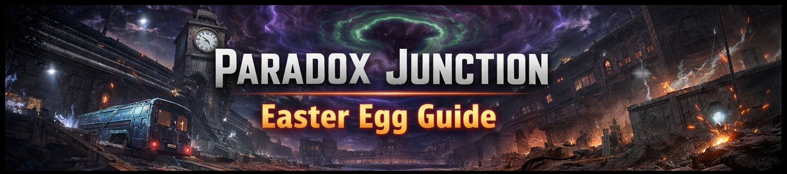

🧪 Paradox Junction Easter Egg Tracker
Quick Notes
- Explosive = Ray Gun / Semtex.
- N.E. = Need explosive.
- Clear dog round no later than round 5.
- These steps were cleaned up from your handwritten notes.
🔫 Notes
This page uses your handwritten Paradox Junction steps as the tracker checklist.